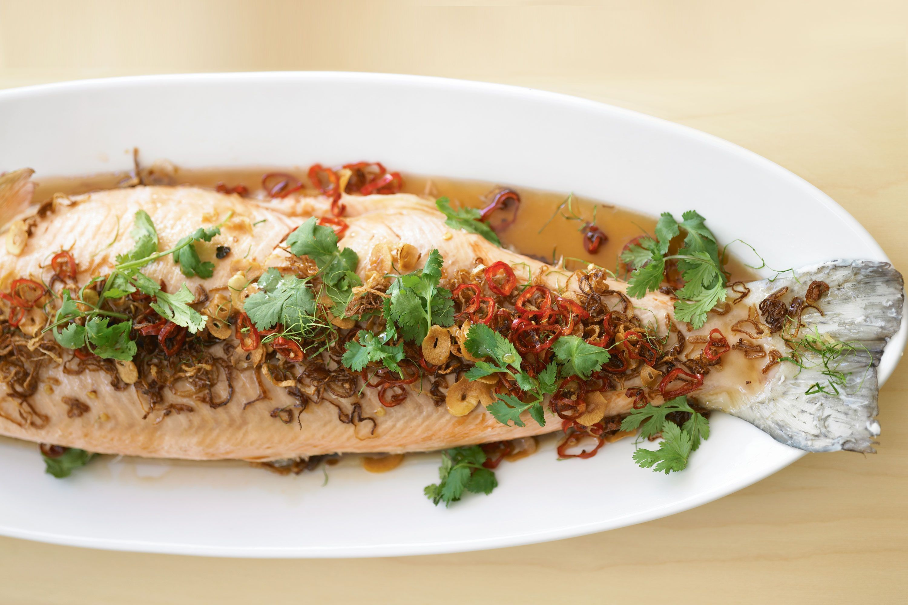

Thai-style poached salmon

Description
This Thai-style whole salmon will make a beautiful centerpiece for the festive table. Both the fish and sauce can be served hot, warm or cold, so all the work can be done in advance.
Ingredients:
- 2 lemongrass stems (white part only), halved, bruised
- 8 kaffir lime leaves
- 2cm piece ginger, sliced
- 2kg whole salmon or ocean trout, cleaned, scaled
- 1 bunch coriander
- 300g light palm sugar, grated
- 1/2 red onion, sliced
- 2 1/2 tablespoons tamarind concentrate
- 50ml fish sauce
- Vegetable oil, to deep-fry
- 6 Asian red eschalots, thinly sliced
- 4 garlic cloves, thinly sliced
- 2 long red chillies, sliced into rounds
- Lime wedges, to serve
Steps:
- Place 2 lemongrass halves, 2 lime leaves and half the ginger in the cavity of the fish, then place in a fish kettle (from kitchenware shops),
cover with cold water and slowly bring to the boil over medium heat. When boiling, switch off the heat, cover tightly and stand for 30 minutes
(without removing lid) until just cooked.
- While fish is cooking, wash coriander well, pick leaves and refrigerate until required. Make sure coriander roots are free of dirt, then thinly slice.
Place palm sugar in a heavy-based pan over medium heat. Add 2 tablespoons of water and stir until the sugar dissolves.
Add coriander roots, onion, remaining lemongrass and ginger and 4 lime leaves. Bring to the boil, then simmer over low heat for 5 minutes or until lightly
caramelized. Add tamarind and fish sauce, then simmer for a further 5 minutes. Strain into a jug, pressing down on solids before discarding.
Set aside until ready to serve.
- Half-fill a deep-fryer or heavy-based pan with oil and heat to 190°C (or test a cube of bread - it will turn golden in 30 seconds when oil is ready).
Fry the eschalots, garlic and chilli, in separate batches, for 1-2 minutes until crisp and golden. Drain on paper towel.
- Carefully remove the fish from the poaching liquid and place on a large serving platter. Pat dry with a paper towel. To remove the skin, loosen around the
gills and pull back towards the tail. (It's not necessary to remove the skin from the underside of fish at this stage.) Use a paper towel to soak up any
moisture around the fish. Pour over the sauce and garnish with the fried eschalots, garlic and chilli, the coriander leaves and the remaining finely
shredded 2 kaffir lime leaves.
- Bon Appétit!
Return to Main Page